Robotic-harness · 归档于 2026-11-03
ZAP
Pretraining Knows What, Simulation Teaches How: Compositional Generalization for Agentic Robotics
归档到 Robotic harness：一个 27B 开源 VLM 通过 5 个 tool 的 harness 直接驱动机械臂，并在仿真里用 RL 训出 motion control，正是 agent-as-policy 的 harness 路线。
TL;DR
- Problem
- 小 VLM 懂任务（what），但不会动（how）：base Qwen 3.6 27B 的 motion call 只有 36% 是对的，真机成功率 16.7%。
- Idea
- 语义交给预训练，motion 只在仿真里学：40 个简单任务上挖模型自己的成功轨迹做 SFT，再用 dense reward ladder 跑 GRPO。无 teacher、无真机数据。
- Result
- 真机 96.7%，和 GPT-6 Astra 持平但快 3×（146 s vs 397 s）、便宜 17×（$0.29 vs $4.87）；RoboLab-120 74.0% vs 72.2%；零训练迁移到 Franka 55.9%。
Problem
小模型卡在 how，VLA 卡在 what，frontier 模型都会但又慢又贵
Running example · 后面每个 stage 都跟着它走
魔方放到碗后面：真机双臂 YAM，桌上一个魔方和一个红碗，overhead 加两个 wrist 相机；prompt Put the rubiks cube behind the bowl（Table 5）→ 想要：魔方被抓起，放在碗的后面，而不是碗里。
flowchart LR IN["魔方 → 碗后面
真机 YAM"] IN --> A1["Base Qwen 27B
计划对：找到魔方"] A1 --> AX["how 错：抓得太高
0/3 · 真机 16.7%"]:::gap IN --> B1["MolmoAct2 (VLA)
抓取干净"] B1 --> BX["what 错：放进碗里
0/3 · 真机 33.3%"]:::gap IN --> C1["GPT-6 Astra
Robocurve harness"] C1 --> CX["失败，原因未说明
0/3 · 真机 36.7%"]:::gap IN --> D1["GPT-6 Astra
ZAP harness"] D1 --> DX["成功但慢且贵
3/3 · 397 s · $4.87"]:::gap
每行的 0/3、3/3 来自 Table 5（本任务），百分比是 10 个真机任务的总成功率（Table 2）。Base Qwen“抓得太高”来自项目页 Fig. 12 的魔方视频（未注明是哪个魔方 prompt），和 §3.2 的 motion 分类一致。MolmoAct2 放进碗里是 §4.1 原文。Astra 在 Robocurve harness 上为什么失败，论文没有分析。397 s 和 $4.87 是 10 个任务的平均（Table 2），不是这个任务单独的数。
根本问题：语义推理（what）在预训练里已经有了，小 VLM 缺的是 motion control（how）；VLA 两样都从机器人数据学，所以语义被数据覆盖面卡住。 这篇的切入点：把两者拆开，保留 VLM 的 what，只在仿真的简单任务上教 how，然后靠组合泛化到没见过的真机任务。
Related work
| 相关工作 | 解决什么 | 怎么解决 | 和本文的区别 |
|---|---|---|---|
| 同一问题 · 别的解法 | |||
| Frontier 模型当 agent policy GPT-6 Astra, Opus 5.5, Robo-Harness K1 | 零样本闭环操作 | 万亿参数闭源模型 + tool harness | 又慢又贵（397 s, $4.87/任务）→ 27B 开源模型自己学会 motion |
| VLA / WAM 端到端策略 MolmoAct2, π0, Lakeside, FLUX 3 Action | 通用操作策略 | 在机器人动作数据上同时学推理和动作 | 语义受动作数据覆盖限制（behind、exactly three）→ 语义来自预训练，不靠机器人数据 |
| 小模型 robot agent（本文所属） Guava, RACaP, Robo-Harness K1, Show-Harness, CaP-RL | 小模型做 tool-calling agent | 蒸馏 frontier teacher 轨迹，或 grasp 宏、离散 action unit | 上限被 teacher 和宏卡住 → 自己的成功轨迹 + RL，直接出绝对末端位姿 |
| 相似做法 · 别的问题 | |||
| 推理与运动分离 TAMP, SayCan, Inner Monologue, Plan-Seq-Learn | 长程任务分解 | LLM 或符号规划 + 固定技能库 / 底层策略 | motion 在静态库里，换任务就要新技能 → motion 训进模型本身，pick-and-place 学到的抓取能复用到画 X |
| LLM agent 的多轮 RL GRPO, RAGEN, VAGEN, Embodied-R1 | 语言 agent 的多轮决策 | GRPO 式多轮 RL，在文本或仿真环境里 | 动作是文本或游戏操作 → 动作是真实机器人的末端位姿，sim 训练直接上真机 |
来源：论文 §2 Related work 和附录 E Extended related work，以及 §1、§4 里和 Astra、MolmoAct2、Lakeside、FLUX 3 Action 的对比；未另行检索。
Level 1 · Big picture
同一套权重：仿真里只学简单的动，真机上靠预训练的懂去组合新任务
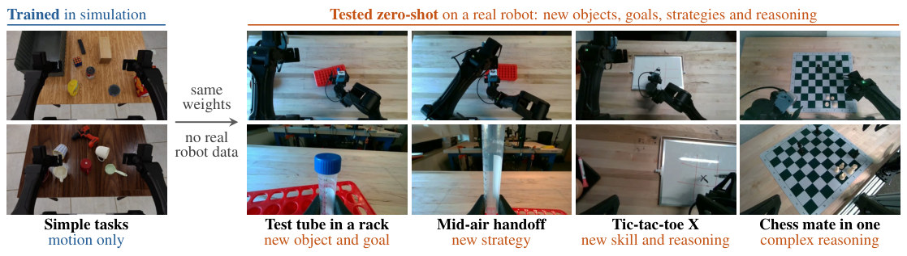
怎么读这张图
- 左栏 Trained in simulation / Simple tasks, motion only：训练只有仿真里的简单抓放，任务本身不需要推理。魔方任务不在其中。
- 中间箭头 same weights, no real robot data：右边所有真机结果用的是同一个 checkpoint，没有任何真机微调。
- 右栏四列：每列底下的橙色小字是它考的泛化轴：新物体和目标（试管）、新策略（空中交接）、新技能加推理（井字棋 X）、复杂推理（国际象棋一步杀）。魔方放碗后面属于前三列之前的那一档：新任务加空间语义。
flowchart LR P["预训练 VLM 的 what
behind = 碗后"] --> Z["ZAP
Qwen 3.6 27B"] S["仿真里学的 how
抓起、搬运、放下"] --> Z Z --> O["真机零样本
魔方放碗后 3/3"]:::win
Level 2 · Stages
5 个 stage：先诊断，再在仿真里补 how，最后零样本上真机
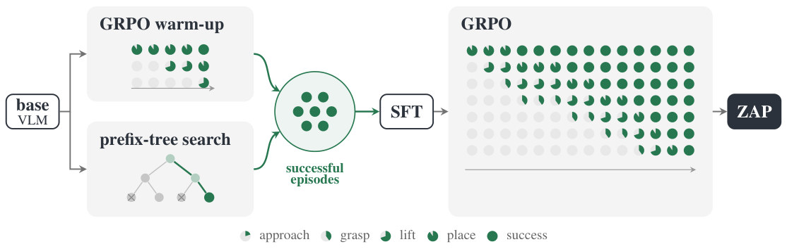
怎么读这张图
- 左边 base VLM 分两路：上路 GRPO warm-up，下路 prefix-tree search，都是为了挖出模型自己的成功轨迹（Stage 3）。
- 中间绿色圆 successful episodes → SFT：挖到的成功轨迹做 SFT，让模型先站到“能成功”的分布上。
- 右边大框 GRPO：每个小圆是一个 episode，扇形填充程度 = 拿到的 partial credit（底部图例：approach、grasp、lift、place、success）。从左到右整片变成实心绿，就是 reward ladder 把模型一步步推到完成（Stage 4）。
flowchart TD S1["1 · Harness
5 tools · 绝对位姿"] --> S2["2 · 诊断 base
motion 对 36%"] S2 --> S3["3 · 挖成功轨迹
3.9k traces → SFT"] S3 --> S4["4 · GRPO 梯子
0.9 封顶 · 完成 5.0"] S4 --> S5["5 · 零样本部署
魔方放碗后 3/3"]:::win click S1 href "#stage-1" click S2 href "#stage-2" click S3 href "#stage-3" click S4 href "#stage-4" click S5 href "#stage-5"
点击 stage 展开 Level 3 细节。贯穿所有 stage 的是同一个 harness 跑仿真 YAM、真机 YAM 和仿真 Franka。
Level 3 · Details
每个 stage 的细节
Stage 1 ZAP harness 相机图像 + prompt → tool call（末端位姿、夹爪）
- Why：给模型一个在仿真和真机上完全一样、又不替它做决定的接口；motion 必须由模型自己出。
- How：任务是一段对话：模型先写计划、点名要找的物体，再循环调用感知和运动 tool（§3.1）。
- 5 个 tool：
move_to（一只或两只臂的完整末端位姿，两臂同一调用就同步运动）、set_gripper（0 闭到 1 开）、change_query（改感知要分割的物体描述）、update_todo（短计划，每轮都附在观测里）、done。 - 没有 grasp 宏和 motion primitive：早期版本加过，在为之设计的物体上成功率更高，换别的就碍事；作者的说法是宏抬高下限、也封住上限（附录 A）。
- 感知：SAM 3.1 在每路相机后台持续分割 query 里的物体，加标定深度得到 3D centroid、高度、主轴；模型只能通过
change_query控制它。仿真里同样跑在渲染图上，不读任何特权位姿。 - Validation 和 outcome：超出倾角或工作空间的
move_to被拒绝（不裁剪），理由作为错误消息返回。控制器走直线笛卡尔路径加密集 IK，结束时报 5 种结果之一：reached / short / incomplete / not attempted / unknown，非 reached 附原因和位置、姿态误差。
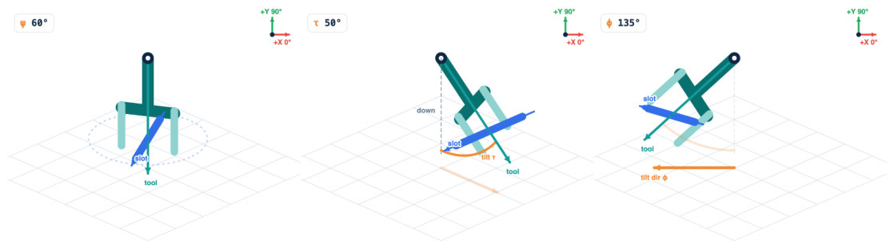
move_to 用的夹爪姿态参数：每个角只改变夹爪一件看得见的事，都从世界 +x 逆时针量。| 符号 | 白话 | 例子里的值 |
|---|---|---|
| ψ slot yaw | 夹爪两指之间那条缝的朝向，也就是被夹物体躺的方向，绕竖直轴转 | slot_yaw=180（附录 B 抓积木） |
| τ tilt | 工具轴离“竖直朝下”偏了多少：0° 从正上方抓，90° 水平侧抓 | tilt=0，从正上方抓 |
| φ tilt direction | 倾斜时指尖朝哪个方位倒；tilt 为 0 时没有意义 | 未用（tilt 为 0） |
怎么读这张图
- 左（ψ 60°）：蓝色的缝绕竖直轴转，夹爪本身仍朝下。
- 中（τ 50°）：青色工具轴从竖直往外倒，倒得越多越接近侧抓。
- 右（φ 135°）：橙色箭头是倒的方向。作者不用 Euler 角或四元数，因为它们看不出夹爪指向哪、缝朝哪，而侧抓正好落在 Euler 奇异点上，几度的物理误差会让读数跳约 100°。
flowchart TD a["Observe
3 路图 + 3D centroid"] --> b["Plan / query
update_todo"] b --> c["Act
move_to 绝对位姿"] c --> d["Validate + 控制器
reached / short …"] d --> a
Running example 在这一步
魔方任务论文没有逐轮记录，下面的值来自论文唯一完整记录的真机 episode（附录 B，“pick up both blocks”，9 轮，72.8 s）。魔方任务走的是同一个循环。
Turn 1 change_query(["plain wooden block", "white block with letter A"]) → Turn 2 读出左块 centroid (0.412, 0.200, 0.009) → Turn 3 两臂同时 move_to(x=0.412, y=0.2, z=0.12, slot_yaw=180, tilt=0) → 控制器回 reached，位置误差 ≤1 mm → Turn 5 夹爪闭合，stalled at 50.0 mm / 37.0 mm（夹住了）→ 抬起后看 top_z 从约 0.01 涨到 0.155，确认后 done。
Stage 2 Pretraining knows what, but not how base Qwen 3.6 27B 的 episode → 失败归因
- Why：失败可能是不懂任务，也可能是不会动；先分清楚，才知道该训什么（§3.2）。
- What 没问题：RoboLab-120 上 95% 的场景计划正确（目标物、目的地、顺序），70% 感知 query 返回了所有该返回的物体。
- 但两者都对时，成功率也只有 9%。
- How 是瓶颈：motion call 只有 36% 正确；32% 物理上不可能（被控制器拒绝），15% misdirected（意图对、位姿错，比如停在物体上方），16% pointless（比如端着空夹爪去搬运）。
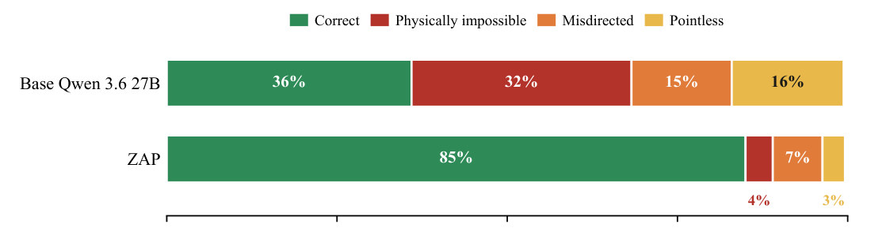
怎么读这张图
- 上条 Base Qwen 3.6 27B：绿色 correct 只占 36%，红（不可能）、橙（方向错）、黄（无意义）加起来超过六成。
- 下条 ZAP：绿色涨到 85%，红 4%、橙 7%、黄 3%。这是训练后的结果，对应 E4。
flowchart TD a["计划
95% 正确"] --> b["感知
70% 全找到"] b --> c["motion call
只有 36% 正确"]:::gap c --> d["任务成功
前两步都对也只 9%"]:::gap
Running example 在这一步
base Qwen 找到了魔方，计划也对，但夹爪下降不够，抓得太高，属于 misdirected（项目页 Fig. 12）→ 魔方放碗后 0/3。所以要补的只有 how。
Stage 3 在仿真里挖自己的成功轨迹 → SFT 40 个简单仿真任务 → 3.9k 成功 traces → SFT checkpoint
- Why：RL 要模型已经站在能成功的分布上才学得动；很多任务 base 模型试几百次也一次不成功（§3.3）。
- 仿真：Isaac Sim 里加标定过的仿真 YAM 臂和相机，臂的动力学对齐真机。
- 40 个任务：抓起、单物体和多物体抓放、堆叠、重新摆放，目标刻意简单、不需要深推理，都不在 RoboLab-120 里。
- GRPO warm-up：跑几十步 GRPO，对难任务过采样，收集成功 rollout。随着策略变好，难任务开始有成功，数据来自略微进化的模型自己，接近 on-policy 的 self-distillation。
- Prefix-tree search：warm-up 后仍从未成功的任务，对部分 episode 做树搜索（见下图），找到了 RL 采样从未解出的几个任务的成功轨迹。
- 没有 frontier teacher：和 Guava、RACaP 等蒸馏路线相比，上限不受 teacher 限制。
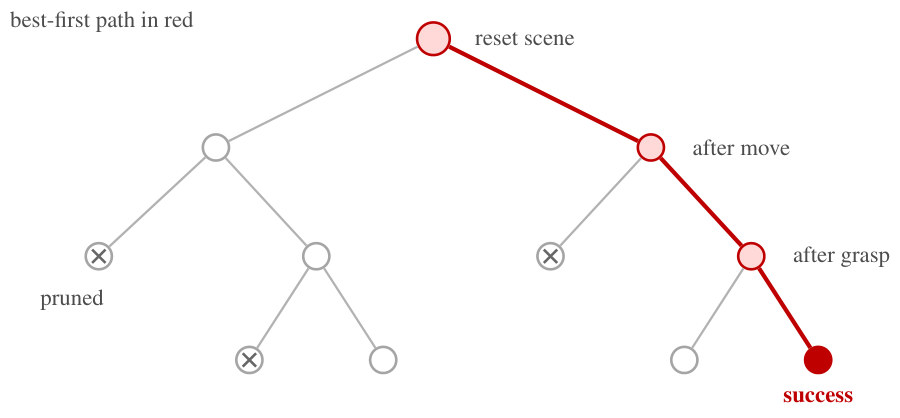
怎么读这张图
- 根节点 reset scene：扩展某个节点时，把仿真重置到任务的确定性起点，回放该节点存的动作，恢复 agent 上下文，再采样一个新的续写。
- 红线 best-first path：after move → after grasp → success。选哪个节点扩展，看它的分支成功率、任务进度和被试的次数（试得少的优先）。
- 带 × 的 pruned：一直失败的分支不再扩展。
flowchart TD a["GRPO warm-up
几十步 · 难任务过采样"] --> c["成功 episodes
3.9k traces"] b["Prefix-tree search
每任务约 1000 叶子"] --> c c --> d["SFT
RoboLab 58.3%"]:::win
Running example 在这一步
这里练的是抓起、搬运、放下这类和场景无关的动作，没有魔方，也没有“behind”。数据量很关键：早期挖的 455 条 traces SFT 后只有 17.2%，挖到 3.9k 条后是 58.3%（E7）。
Stage 4 GRPO + dense reward ladder SFT checkpoint → ZAP（SFT + RL）
- Why：二值成功奖励在 0 成功的任务上没有 advantage，也就没有梯度；需要 partial credit 把模型一级级往上推。
- 梯子（pick-and-place）：按最终场景状态算：approach 最多 0.2（按指尖到物体的距离缩短比例）；grasp 0.2；lift 再加最多 0.55（抬到 8 cm）；transport 让总分最多到 0.9（按离目标的距离）；完成 5.0，减一点按轮数的 length penalty。
- 设计原则：完成必须远高于 partial，否则模型会安于稳拿 partial credit。具体数值没有做 ablation，是整体拍定的。
- 防 reward hacking：success checker 要求目标状态保持至少 0.5 秒。
- Turn 级惩罚：没调 tool、或提出过不了 validation 的无效运动，那一轮（不是整条序列）得负 advantage。不加惩罚时这两种错误率曾高达 4% 和 34%，加了以后降到 0% 和 3%。
- 超参（附录 C）：Dr. GRPO 风格（无 std 和长度归一化），每任务 2 组 × 8 rollout，每 batch 640 episode 覆盖 40 个任务；LoRA rank 64；每 episode 最多 50 轮、序列 127k token；STAPO、DPPO mask 0.2、staleness 5；prime-rl 风格异步训练。
flowchart TD a["approach
≤ 0.2"] --> b["grasp
+0.2"] b --> c["lift 到 8 cm
+≤0.55"] c --> d["transport
累计最多 0.9"] d --> e["success
5.0 − 轮数惩罚"]:::win
Running example 在这一步
魔方任务不参与训练。把梯子套在它身上只是为了看清每一级奖的是什么动作：靠近魔方 → 夹住 → 抬起 → 搬到碗附近，最多拿 0.9；只有真放到碗后面并停稳 0.5 秒才有 5.0。base Qwen“抓得太高”卡在 grasp 这一级，梯子正好奖励它往下多走一点。
Stage 5 零样本部署：真机、新任务、新机器人 ZAP checkpoint → 真机 YAM / 仿真 Franka
- Why：验证 how（仿真学的）和 what（预训练带的）能组合到两边都没见过的任务上（§4.3、§4.4）。
- 不重训：同一 checkpoint；换平台只换 system prompt 里的机器人和相机描述，以及底层后端。
- 泛化轴：新任务和物体；按要求换策略；复杂推理；对 prompt 措辞不敏感、能被精确指挥。
- 没有一个目标、物体、场景、prompt 或策略出现在训练里。
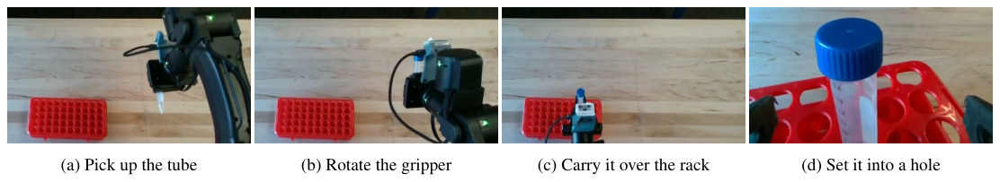
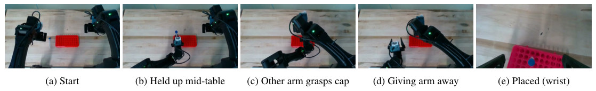
怎么读这张图
- (a)→(b) Held up mid-table：一只手把试管盖朝上举到桌子中间。
- (c) Other arm grasps cap：另一只手从上方下来，低到够夹住盖、又不碰到第一只手，闭合。
- (d) Giving arm away：先闭接收手再开给出手，然后让开。太早放会掉，接收手太低会撞。
- (e) Placed (wrist)：插进孔。
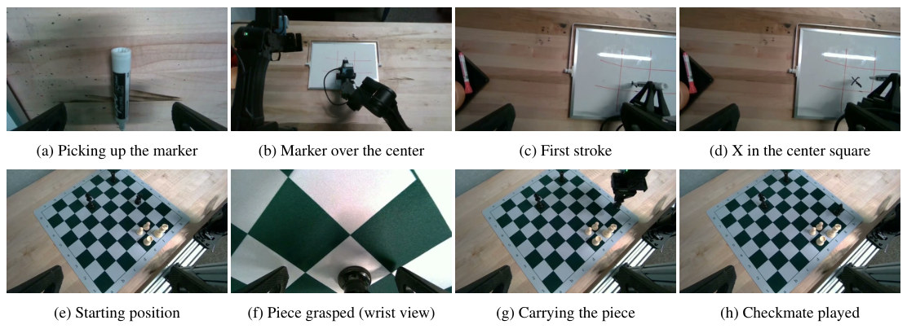
怎么读这张图
- 上排 (a)–(d)：拿起马克笔 → 移到中心 → 第一笔 → X。模型得知道井字棋盘是什么、中心格在哪；画时保持接触刚好留下线，又不压断或压歪笔。
- 下排 (e)–(h)：看盘面 → 按规则找出黑方的杀着 → 抓起对的棋子（f 是 wrist 视角）→ 放到目标格。只有 VLM 的推理加仿真学的抓放，才能走出这步杀。
flowchart TD Z["同一 ZAP checkpoint
只在仿真 YAM 上训"] --> R["真机 YAM
魔方放碗后 3/3"]:::win R --> N["新任务
试管 · 交接 · X · 杀棋"]:::win Z --> F["仿真 Franka
RoboLab 55.9%"]:::win
Running example 在这一步
真机上 ZAP 把魔方放到碗后面 3/3，三个 baseline 里两个是 0/3。behind 来自预训练，抓起和放下来自仿真。同一张桌子接着换上试管架：竖着插试管、按指令插左上角、空中两手交接，再换成白板和棋盘。用的都是这一个 checkpoint。
贯穿全程 一个 harness，仿真和真机通用 机器人描述 + 后端 → 同样的观测和动作格式
- Why：sim 里训的策略不改就上真机，靠的是模型看到的观测和发出的动作在两边格式完全一样；只有动力学和感知质量不同（附录 A、E）。
- 怎么做：关节限位、相机、工作空间都写在声明式的 embodiment description 里；换平台只换它和底层后端。
- 为什么能换机器人：模型输出的是末端位姿而不是关节角或 action chunk，单臂 7 关节的 Franka、不同夹爪和相机都由 harness 吸收。
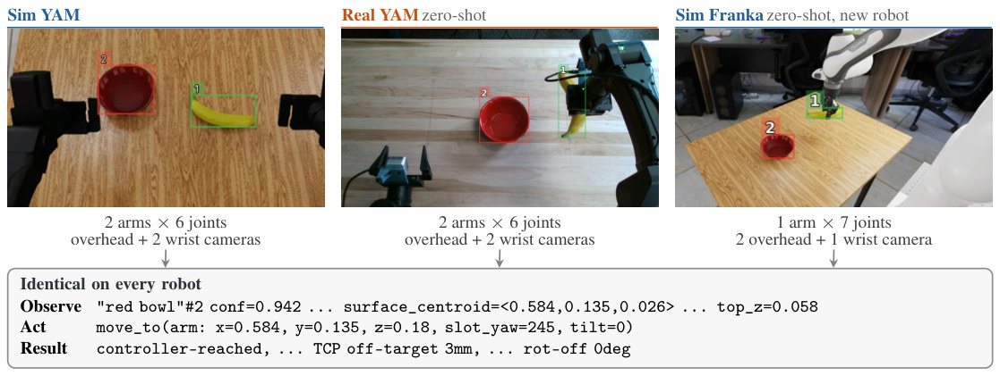
怎么读这张图
- 上排三张图：标签写着各自的硬件：2 臂 × 6 关节、overhead + 2 wrist 相机；Franka 是 1 臂 × 7 关节、2 overhead + 1 wrist。图上的编号框是 SAM 3.1 的 mask。
- 下框 Observe："red bowl"#2 conf=0.942 … surface_centroid=<0.584,0.135,0.026> … top_z=0.058，碗的 3D 读数，单位米。
- Act：move_to(arm: x=0.584, y=0.135, z=0.18, slot_yaw=245, tilt=0)，直接用读到的 centroid 当目标，抬高到碗上方 0.18。
- Result：controller-reached … TCP off-target 3mm … rot-off 0deg。三个机器人用的都是这个格式。
Recap：例子覆盖了论文的哪些 idea
| 论文里的 idea | 例子里在哪体现 |
|---|---|
| what / how 拆开 | Problem：base Qwen 卡 how（抓太高），MolmoAct2 卡 what（放进碗里） |
| 无宏的 5-tool harness，绝对位姿 | Stage 1：附录 B 的真机 episode，逐轮 tool call |
| 诊断：motion 才是瓶颈 | Stage 2：魔方抓太高 = misdirected，motion 只有 36% 对 |
| 挖自己的成功轨迹，prefix-tree search | Stage 3：没有魔方的简单仿真任务，3.9k traces |
| Dense reward ladder + turn 级惩罚 | Stage 4：靠近、夹住、抬起、搬运，≤0.9；放稳才 5.0 |
| 组合泛化、语言可控 | Stage 5：魔方 3/3，然后试管、左上角、交接、X、杀棋 |
| 同一接口，跨 sim、真机、机器人 | 贯穿全程：Fig. 2 碗的读数在三台机器人上格式一样；Franka 55.9% |
| 3× 快、17× 便宜 | Problem 第四行和 E3：Astra 也能 3/3，但平均 397 s、$4.87 |
Results
27B 开源模型在成功率上追平 frontier，在时间和成本上大幅领先；提升全在 motion，并能迁移
顺序同论文 §4：E1 仿真里能不能追平 frontier → E2 真机上呢 → E3 代价差多少 → E4 训练到底改了什么 → E5 能不能组合出新任务 → E6 换机器人行不行 → E7 ablation。E1、E2、E6、E7 比成功率，E3 比时间和钱，E4 比 motion 正确率。
E1仿真 benchmark 上能追平 frontier 模型吗？§4.1 · Table 1
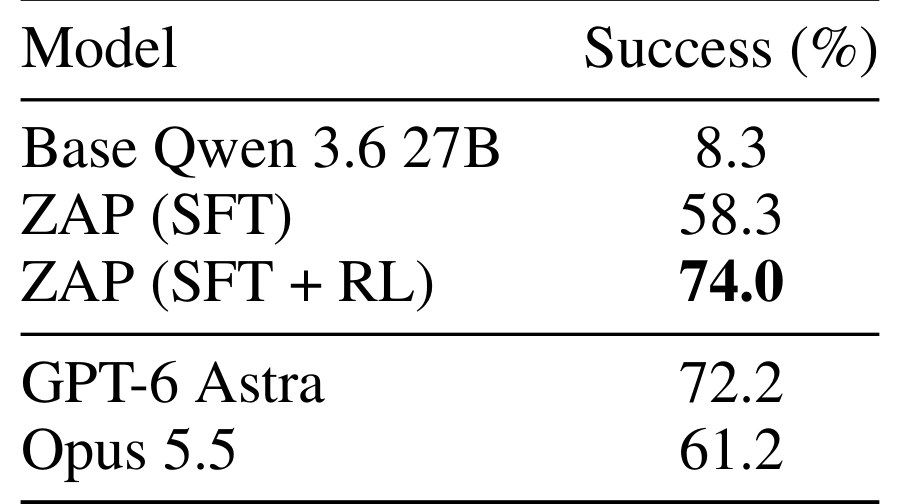
- 说明什么
- 成功率与 frontier 持平。ZAP 74.0% vs GPT-6 Astra 72.2%、Opus 5.5 61.2%；base 8.3% → SFT 58.3% → SFT + RL 74.0%。
- 在故事里
- 证明只在 40 个简单任务上学 motion，就够在 120 个没见过的任务上追平 frontier。
- 指标
- 任务成功率（%），由 RoboLab 的成功判定给出；论文未说明每个场景跑几次或几个 seed。
- 怎么评测
- RoboLab-120 改成双臂 YAM 的版本，训练任务都不在其中。
- 所有模型都跑在 ZAP harness 里。frontier 模型没有在 YAM 上训练过，但也没有这种“仿真里练过 how”的优势。
E2真机上呢？§4.1 · Table 2 左、Table 5
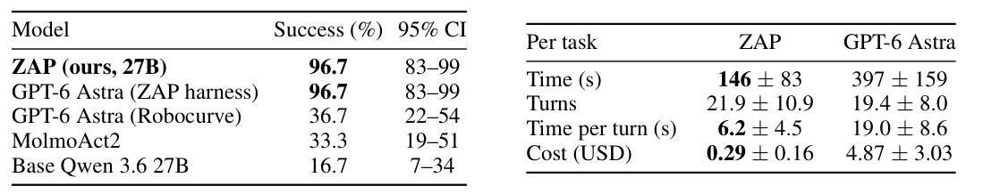
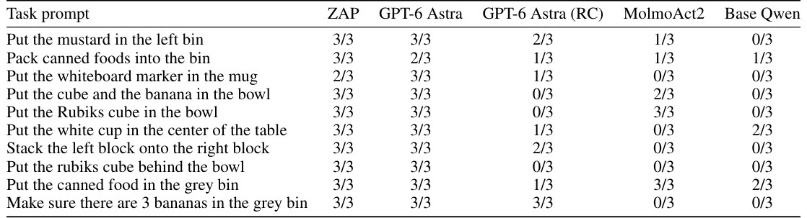
- 说明什么
- 真机成功率与 frontier 持平，远超 VLA 和 base。ZAP 96.7%（29/30）= Astra 在 ZAP harness 上的 96.7%；Astra 在 Robocurve harness 36.7%，MolmoAct2 33.3%，base Qwen 16.7%。
- 在故事里
- 仿真学的 how 零样本上真机。MolmoAct2 也给了反面：动作会做，语义不行（behind 0/3，三根香蕉 0/3）。
- 指标
- 每个模型 30 次（10 个任务 × 3），成功率配 95% Wilson 区间；ZAP 和 Astra 的区间都是 83–99。
- 怎么评测
- 真机双臂 YAM，从 RoboLab-120 任务列表里挑 10 个不同复杂度的任务复现（附录 D）。
- Astra 跑两种 harness，reasoning level max；MolmoAct2 作为 VLA 代表。每任务只 3 次，区间很宽，ZAP 和 Astra 在统计上分不开。
E3同样能做，代价差多少？§4.1 · Table 2 右
- 说明什么
- 快 3×，便宜 17×。每任务 146 ± 83 s vs 397 ± 159 s，$0.29 ± 0.16 vs $4.87 ± 3.03。轮数差不多（21.9 vs 19.4），差在每轮时间（6.2 s vs 19.0 s）。
- 在故事里
- “小”的价值：两者解题方式一样（轮数相近、选同样的物体和顺序、发同类运动），但小模型每轮便宜得多。
- 指标
- 每任务的墙钟时间、轮数、每轮时间、美元成本，mean ± std。
- 怎么评测
- ZAP 用 vLLM 部署在一张 B300 上，按 $7.10/小时计价，带 2-token multi-token-prediction head。
- Astra 的成本按什么计（API 价格？）论文没写；时间里包含 API 延迟，这一项对自部署的 ZAP 更有利。
E4训练改的是理解还是动作？§4.2 · Fig. 4、Fig. 5
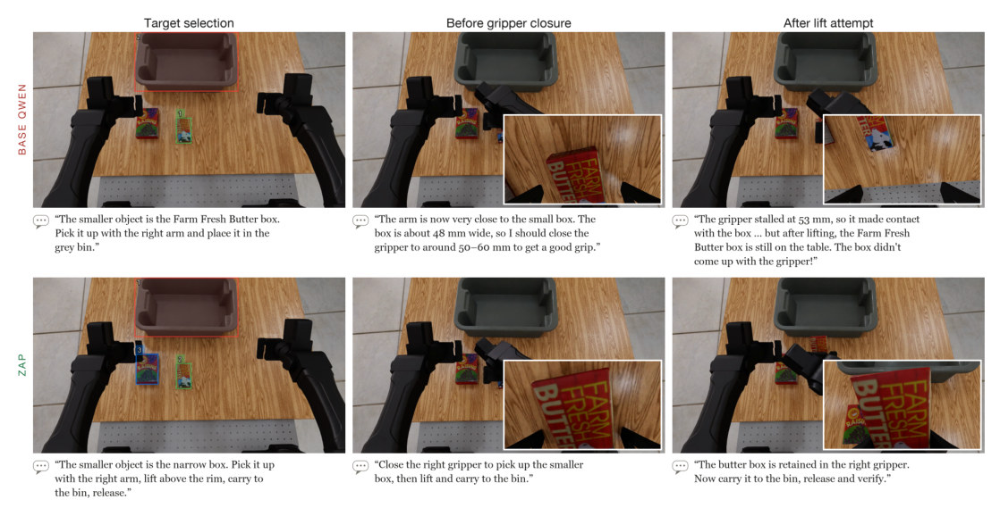
怎么读这张图
- 第一列 Target selection：两个模型都选中 Farm Fresh Butter 盒、都选右臂。what 一样。
- 第二列 Before gripper closure：base 推理说盒子约 48 mm 宽，把夹爪合到 30–40 mm，可它停在盒子上方 0.6 cm；ZAP 把指尖降到桌面、分在盒子两侧，合到夹住为止。
- 第三列 After lift attempt：base 在 53 mm 处卡住，抬起后盒子还在桌上；ZAP 的盒子在右手夹爪里。
- 说明什么
- 理解没变，动作变了。两个模型在 90% 以上的场景里选的目标、目的地和顺序一致，70% 场景感知结果一样；只看感知结果一致的 episode，成功率 base 9.0% vs ZAP 73.6%。motion call 正确率 36% → 85%（Fig. 4）。
- 在故事里
- 直接支撑标题：pretraining 给 what，simulation 给 how，而且训 how 没有损伤 what。
- 指标
- 计划和感知一致率；每条运动命令归入 correct / physically impossible / misdirected / pointless（Fig. 4 的定义）。
- 怎么评测
- RoboLab-120 的 episode，base vs ZAP 逐场景对比。
- 运动命令怎么判为 misdirected 或 pointless（人工还是规则），论文没说。
E5能组合出训练里完全没有的真机任务吗？§4.3 · Fig. 6–9
- 说明什么
- 能，但只有定性演示。竖插试管、按指令插左上角、空中双臂交接、井字棋画 X、国际象棋一步杀，都由同一 checkpoint 完成（图见 Stage 5）。
- 在故事里
- “组合泛化”这个主张的全部证据：每个任务都需要模型从没练过的推理加动作组合。
- 指标
- 没有成功率，每个任务展示一个成功 episode。
- 怎么评测
- 真机 YAM，物体、目标、prompt、策略全部不在训练中。
- 没给试验次数，也没有 baseline 对比；项目页另有两例失败：五根试管放好四根后掉了最后一根，按颜色分水果时漏了左箱里的一个红果。
E6换一台没见过的机器人行吗？§4.4 · Table 3
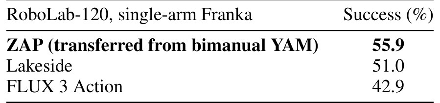
- 说明什么
- 零训练迁移，仍高于专门的 VLA / WAM。ZAP 55.9% vs Lakeside 51.0%、FLUX 3 Action 42.9%。
- 在故事里
- 学到的不是 YAM 专属的映射，而是在空间里怎么移动手臂把东西送到目标；harness 负责 embodiment 相关的关节控制。
- 指标
- RoboLab-120 单臂 Franka 成功率。
- 怎么评测
- Isaac Sim 里的 Franka，只换 system prompt 里的机器人描述。
- Lakeside 和 FLUX 3 Action 的数字取自 RoboLab 排行榜，不是作者在同一设置下重跑的。
E7配方里哪部分要紧？§4.5 · Table 4
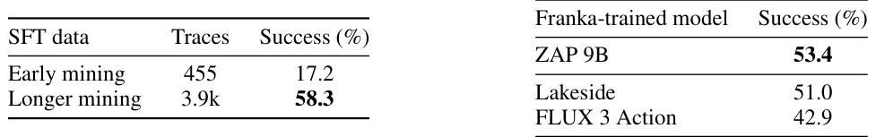
- 说明什么
- SFT 数据质量决定泛化；配方在小模型、别的机器人上也成立。455 条早期 traces → 17.2%，3.9k 条更充分挖掘（更多难任务）→ 58.3%，同配方差 41.1 点。Qwen 3.5 9B 在 Franka 上直接训：53.4%，高于 Lakeside 51.0、FLUX 3 Action 42.9。
- 在故事里
- 说明 Stage 3 挖轨迹不是可有可无，以及整套做法不绑定 27B 或 YAM。
- 指标
- RoboLab-120 成功率（左：双臂 YAM，SFT 后；右：单臂 Franka）。
- 怎么评测
- 9B 用的是“更轻量”的同配方：4.6k 条挖到的成功样本 SFT，再跑 GRPO，训练任务同样不在 RoboLab-120 里。
- 没有拆开 prefix-tree search、reward ladder 各级权重、turn 惩罚各自的贡献；奖励数值作者明说没做 ablation。
Limits
局限和开放问题
- 组合泛化（E5）全是单个成功 episode，没有成功率和 baseline；项目页展示了五根试管掉最后一根、水果分色漏一个的失败。
- 真机评测只有 10 个任务 × 3 次，95% 区间 83–99，和 Astra 分不开。
- RoboLab-120 的次数和 seed 没写；Franka 对比用的是排行榜数字，不是同条件重跑。
- Reward ladder 数值靠经验拍定，未做 ablation；每种任务类型的梯子要手工设计。
- 依赖 SAM 3.1 + 标定深度相机给 3D 读数；感知错了模型只能改 query 重找。
- 146 s 一个任务仍是 agent 级速度，论文没和 VLA 比时间；Astra 的成本口径没写。
- 没有放出代码或权重。
For Robotic harness
对我们有什么用
- 把 Fig. 4 的 motion-call 分类搬进 robot-harness：correct / physically impossible / misdirected / pointless，正好可以由 Supervisor 的 admission 和 evidence 来判。用它给 Native API、Codex、Claude Code 三种 policy 在 RoboTwin、LIBERO 上做失败归因，比只看成功率更能定位问题。
- Harness 接口值得对照：无宏的绝对末端位姿、slot yaw / tilt / tilt direction 姿态参数、validation 直接拒绝并返回理由、控制器的 5 种 outcome、声明式 embodiment description（换 SO-101 只换描述和后端）。
- Runtime 已经跑在 RoboTwin 和 LIBERO 这些仿真上：可以照 ZAP 的配方给小开源模型训 how，即挖自己的成功轨迹、prefix-tree 补难任务、dense ladder 加 turn 惩罚的 GRPO，再零样本上 SO-101，作为 frontier policy 的低成本替代。